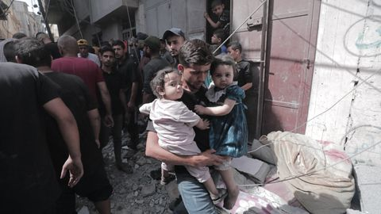
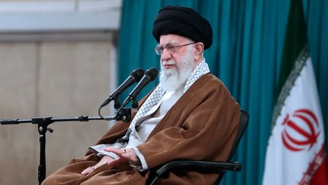

Live blog: Some countries may
play instrumental role in post-war
Gaza - US

MURAT SOFUOGLU
IN DEPTH: What is next for Iran
after President Raisi's death?
Iran will stick to its current policies in the
international sphere as hardliners try to
consolidate power after Raisi's death,
experts say.
Israel wiped out 3% of Gaza's
Christians since October 7 __
Palestine
Trump declines to testify in
historic 'hush money' case
Türkiye to keep cooperating with
Egypt on humanitarian aid to Gaza
Nothern Gaza hospitals under
artillery fire, barely operational:
WHO
HAMZAH RIFAAT
The Rohingyo face
renewed danger at home.
We must not forget them